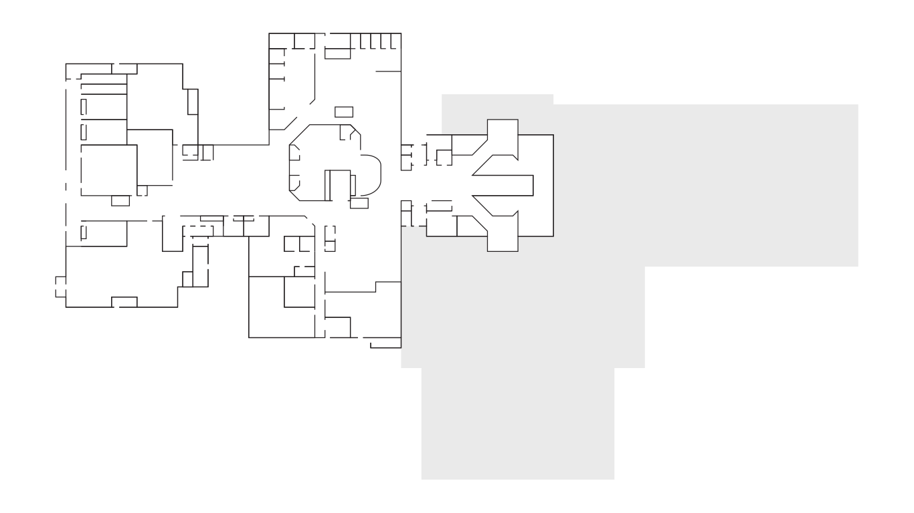
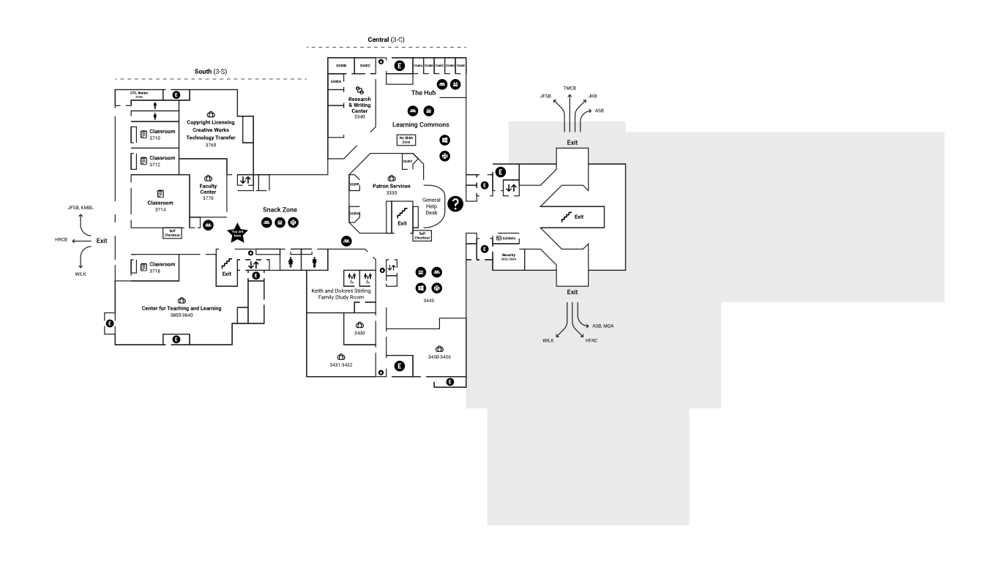
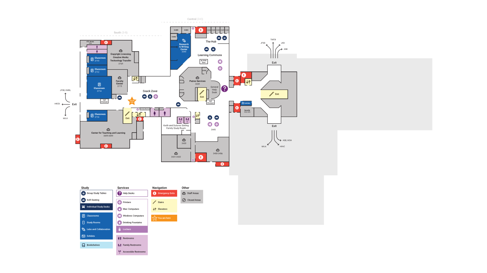
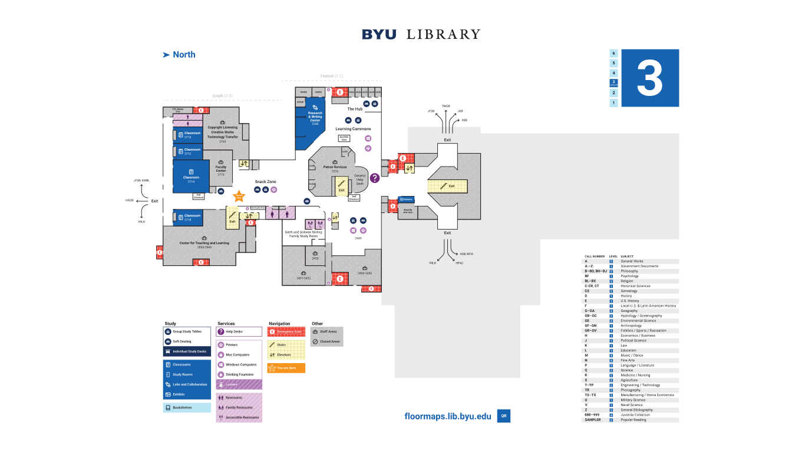

Library Floor Maps
Overview
This project was my first introduction to wayfinding. My supervisor asked me to redesign the Library floor maps as part of a bigger project to improve wayfinding at the Library.
This project was my first introduction to wayfinding. My supervisor asked me to redesign the Library floor maps as part of a bigger project to improve wayfinding at the Library.
I began by researching maps. I looked at best practices for creating maps, both for indoor and outdoor settings. I analyzed how to draw attention to the most important things on the map while also including the less important things. I also researched how to make the new maps accessible so that anyone could read and understand the map without any issues.
One of the main goals I had for this project was to simplify the maps. I wanted to cut out any unnecessary clutter. I decided to create the new map based on a grid system. I started by outlining the building and the rooms and aligning everything to the grid. Doing this reduced the amount clashing lines and made the map easier to scan.
Once I had the building layout done, I started thinking about how to include icons and labels. I wanted to streamline the use of icons throughout the map. I also wanted to reduce the number of font sizes where possible to make the map easy to read. I used a simple icon set that I used in a previous project. I also needed to create a few icons for unique items in the Library. I created templates of icons and labels in a few different sizes and layouts to accommodate various placements on the map. Once I had solidified these templates, I labeled the different rooms and areas throughout the maps.
Then I starting thinking about how to improve the map legend. My goal of simplification was the same for the legend. I reorganized the legend items into four specific groups. Each item in the group was related to the other items in the group. Only some of the previous legend items had icons. I chose to include an icon for every legend item for consistency and to make it easier to understand the map.
efore I started adding color to the maps, my supervisor and I examined the maps in black and white. We looked at the grid-based layout in conjunction with the icons and labels. After some small tweaks, we were happy with the layout and placement of everything.
When I started thinking about color, I focused on a few things. I wanted to use blue to match the Library's branding. I also wanted to choose a color palette that would be accessible to anyone with vision impairment. Keeping the color palette simple was another thing I thought about while brainstorming. At first, I tried using a colorful yet harmonious palette. The colors worked well together, but there were so many colors that it was hard to understand the map at a glance. From there I tried several different color schemes based on a few shades of blue, a blue-green, and a yellow. I was closer to a solid palette with this iteration, but not quite there.
After getting feedback from my supervisor and the team, I reorganized the grouping of items in the legend. That ended up providing a push in the right direction to finding the final color palette. I picked blue, purple, and yellow to represent the three new groups. I picked three shades of those colors to represent and indicate further grouping within each group. And I chose gray to represent the fourth and least important group. The new color palette was perfect for the new legend. The colors and grouping made it really easy to understand the map.
We decided we wanted to enhance accessibility for colorblindness. I experimented with a few different pattern options. I ultimately settled on stripe, checker, and dot patterns. We tested the patterns with a couple colorblind users, and they were able to understand the map quickly. They appreciated the inclusion of the patterns.
We were confident in moving forward with the project since we validated the maps with several users. Before moving to production, I did a walkthrough of the entire library to check the maps for accuracy. I found a few typos and some other corrections that needed to be made. After making those corrections, I had the maps printed at full size. My supervisor and I looked over the printed proofs and determined that we were ready for production.
This project taught me the importance of wayfinding. I never knew what wayfinding was before, and now I realize how similar it is to user experience design. It was cool being able to think about user experience design in regards to physical spaces. I learned how to translate three-dimensional spaces onto a two-dimensional surface. I also learned about how to design for accessibility for a print medium. I thought about colorblindness more than I ever had. Learning the basics of wayfinding made me fall in love with it. I love designing digital interfaces, but I love the physical aspect of wayfinding design.